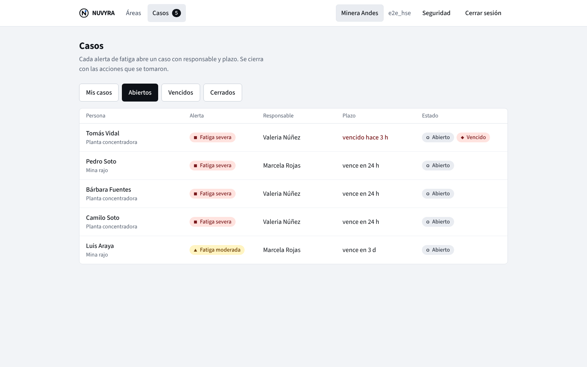

Detecta el cansancio en 2 minutos antes de iniciar el turno.
Cada trabajador mide su atención y velocidad de reacción al comenzar el día. Si alguien presenta fatiga, su jefatura directa recibe el aviso al instante para darle una pausa o asignarle una tarea sin riesgo.
Haz clic 3 veces sobre el círculo azul para probar cómo mide NUVYRA la velocidad de reacción:
Demostración breve del ejercicio diario
Así funciona NUVYRA paso a paso, visto de cerca.
Reproduce el recorrido automático o haz clic en cualquiera de las 4 etapas para ver en tamaño grande cómo se gestiona un caso en terreno.
Comparación justa contra el propio nivel normal
Tras 3 días iniciales de calibración, NUVYRA conoce el ritmo habitual de cada trabajador. Si un día su respuesta es más lenta por mal sueño o efecto de la altura, el sistema lo detecta antes de iniciar tareas críticas.
- No compara entre compañeros de turno
- Indicador claro con forma, color y palabra
Por qué las empresas eligen NUVYRA.
Comparación directa frente a formularios en papel y sistemas de cámaras en cabina.
Revisa las pantallas reales en tamaño grande.
Selecciona cada vista o haz clic sobre la imagen para abrirla a pantalla completa.
01 · Lista de casos y alertas del turno
La jefatura visualiza de inmediato quién requiere atención en su área antes de iniciar labores críticas.

Contrata la plataforma o solicita asesoría especializada.
Plataforma NUVYRA
Evaluación diaria de 2 minutos, alertas tempranas para supervisores y respaldo de las medidas preventivas tomadas en el turno.
Salud en Altura Geográfica (Hipoxia)
Protocolos de hipoxia hipobárica (>3.000 m s. n. m.) y capacitación a cargo de Experta del Área de la Salud (Tecnóloga Médica U. de Antofagasta · Especialización en Altura U. de Chile).
Carpetas de Arranque SERNAGEOMIN
Armado de carpetas de arranque, matrices IPER y procedimientos a cargo de Ingeniera en Prevención de Riesgos SERNAGEOMIN.
¿Necesitas una demostración o un presupuesto a medida?
Agenda una reunión breve o consúltanos directamente según los requerimientos de tu faena.